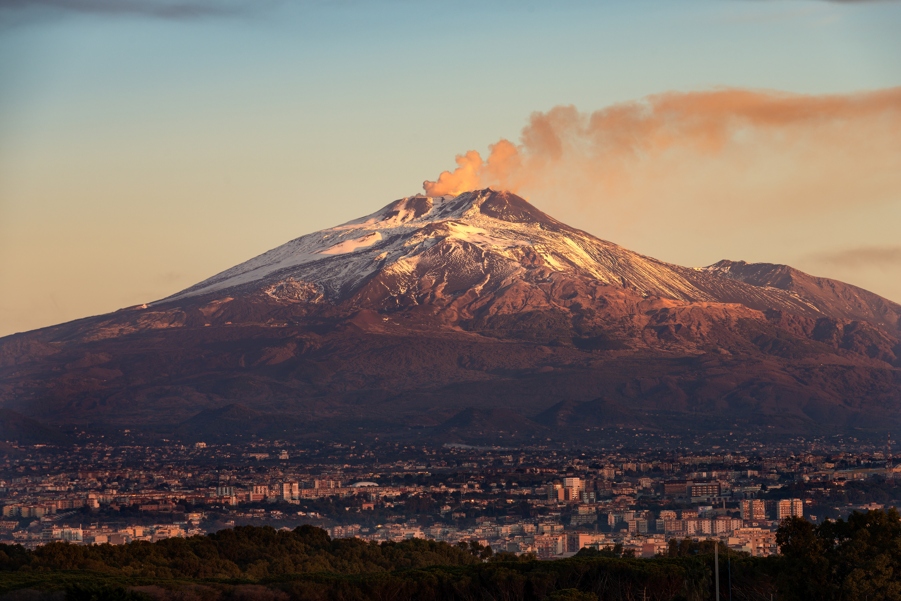

This is your rough guide to Etna
Il Parco dell'Etna, istituito nel 1987, si estende per circa 59.000 ettari abbracciando un territorio unico al mondo. La Riserva naturale integrale rappresenta l'area di maggiore valore naturalistico, dove la natura vulcanica si esprime in tutta la sua potenza e bellezza. Il vulcano, con i suoi 3.357 metri di altezza, domina la costa orientale della Sicilia, offrendo paesaggi che spaziano dai deserti lavici alle foreste rigogliose.
Patrimonio dell'UNESCO dal 2013, l'Etna è un laboratorio naturale dove geologia, biologia e cultura si intrecciano in un equilibrio affascinante e delicato.
Attività per i visitatori
Il Parco dell'Etna offre esperienze indimenticabili per tutti i tipi di visitatori. Le escursioni guidate conducono alla scoperta dei crateri sommitali, paesaggi lunari e colate laviche ancora visibili. La Valle del Bove, un'enorme caldera vulcanica di 5 km di diametro, rappresenta uno degli spettacoli naturali più impressionanti del vulcano.
Per gli amanti della speleologia, le grotte vulcaniche come la Grotta del Gelo, la Grotta dei Lamponi e la Grotta di Serracozzo offrono percorsi suggestivi nel cuore della terra. Numerosi sentieri segnalati attraversano i diversi ecosistemi del parco, permettendo di ammirare la trasformazione del paesaggio dal livello del mare fino alle quote più elevate.

Paesaggi vulcanici e contrasti naturali
L'Etna è un mondo di contrasti. Dalle quote più basse, dove gli agrumeti e i vigneti producono frutti pregiati grazie alla fertilità delle terre vulcaniche, si sale verso boschi di querce, castagni e betulle. Oltre i 1.800 metri, la vegetazione si rarefa e compaiono la ginestra dell'Etna (Genista aetnensis), una specie endemica che colora di giallo le pendici vulcaniche durante la fioritura estiva, e il senecio dell'Etna, pianta pioniera che colonizza le colate laviche più recenti.
La fauna del parco è altrettanto sorprendente: volpi rosse, conigli selvatici, ricci e numerose specie di uccelli rapaci come l'aquila del Bonelli, il falco pellegrino e il gheppio. Nei boschi più fitti si nascondono gatti selvatici e donnole, mentre i cieli sono solcati da gracchi corallini e passeri solitari. Le cavità vulcaniche ospitano colonie di pipistrelli, preziosi indicatori della qualità ambientale.

Come visitare
Accessi principali: Il Parco dell'Etna è facilmente raggiungibile da Catania (a soli 30 km) e Taormina. I punti di accesso principali sono Nicolosi (versante sud), Linguaglossa (versante nord) e Zafferana Etnea (versante est).
Stagionalità: L'estate offre escursioni a quote elevate con temperature miti, mentre l'inverno trasforma l'Etna in una destinazione sciistica unica, con impianti funiviari che raggiungono i 2.500 metri. La primavera e l'autunno sono ideali per il trekking e l'osservazione della flora e fauna.
Consigli: È sempre consigliabile affidarsi a guide autorizzate per le escursioni in quota e verificare le condizioni meteorologiche e vulcaniche prima di partire.
Patrimonio e Sostenibilità
Borghi dell'Etna: Zafferana Etnea, Nicolosi, Pedara, Trecastagni e Linguaglossa sono rinomati per le tradizioni enogastronomiche, i prodotti tipici come il miele, i vini dell'Etna DOC e le specialità a base di pistacchio e mandorla.
Riconoscimento UNESCO: Dal 2013 l'Etna è Patrimonio dell'Umanità UNESCO per il suo valore vulcanologico, geologico e paesaggistico di rilevanza mondiale. Il Parco promuove attività di educazione ambientale e turismo sostenibile, con l'obiettivo di preservare questo straordinario patrimonio naturale per le generazioni future.
Eventi: Numerose sagre e manifestazioni celebrano la cultura dell'Etna, tra cui la Sagra del Miele a Zafferana e l'Infiorata di Nicolosi.